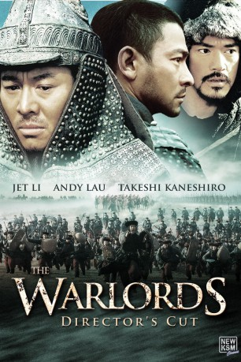
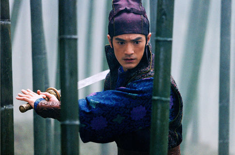

#4744 The Warlords
 
 IMDB-Wertung: 7.1 / 10
IMDB-Wertung: 7.1 / 10  Metascore: 0
Metascore: 0 
China 1870: Das korrupte Qing-Regime bricht auf den Schlachtfeldern zusammen. Nanjing wird zur Hauptstadt der Rebellen, doch als deren General Pang alle seine Männer im Kampf verliert, rettet ihn die schöne Lian (Jinglei Xu). Sie ist die Frau von Jiang. Mit ihm und Zhao schließt Pang Blutsbrüderschaft. Um den Feind zu infiltrieren, laufen sie zum Schein zur Qing-Armee über. Doch dann sollen sie Nanjing einnehmen.
Jahr: 2007
Dauer: 113 Minuten
FSK: 16
Land: Hong-Kong Studio: KSMTonspuren:
Untertitel:
Auflösung: 1080p (1920x816) Größe: 9533 MB
Genre: Action, Drama, Geschichte, Liebe, Krieg
Regisseur: Peter Ho-Sun Chan, Wai Man Yip
Drehbuch: Lorne Cameron
Soundtrack:
Darsteller:
 Jet Li als General Pang Qingyun
Jet Li als General Pang Qingyun Andy Lau als Zhao Erhu
Andy Lau als Zhao Erhu-  Takeshi Kaneshiro als Jiang Wuyang
- Jinglei Xu als Liansheng
- Jacky Heung als Shi Jinbiao
- Pao-Ming Ku als Lord Jiang
- Lei Hao als Villager
 Xiaodong Guo als Huang Wenjin
Xiaodong Guo als Huang Wenjin- Zongwan Wei als Lord Chen
- Kuirong Wang als Lord Di
- Bo Zhou als Lu Dashan
- Zhaoqi Shi als He Kui
- Yachao Wang als Gouzi
- Xiao Yun Wang als Fu
- Peng Guo als Shun
- Ailei Yu als Wang Xiaoshou
- Aaron C. Shang als Duan Feng
- Jian Sun als Wu
- Hai Tao als Gong Jiang
- Kai Ding als Zhu Guan
- Chung Xiao Li als Tai Ping General
- Xu Bing als
- Liang Chen als Villager
- Zhen Wei Cheng als
- Tian Dei als Villager
- Tao Du als Villager
- Dong Han als Villager
- Qang Hao als Villager
- Li He als Villager
- Dong Bafu Hong als Villager
- Yan Shun Hu als
- Hong Jiang als Villager
- Xiang Li als Villager
- Yan Ming Li als Villager
- Xiao Le Liu als Villager
- Li Na Lu als
- Qiang Luo als Villager
- Yun Jie Qiu als Villager
- Xiu Ru Ri als Villager
- Jia Shi als
- Zhen Sun als Villager
- Hui Na Tao als
- Jian Jun Tong als
- Dong Dong Wang als Zhang Shan
- Li Li Wang als
- Peng Wang als Villager
- Qian Hang Wang als Villager
- Xiao Liang Wang als
- Yan Mei Wang als Villager
- You Wu als Villager
Datei: X:\HD-Eastern-Classic(N-Z)\Warlords, The (2007, FSK16, 1920x816).mkv seit 11.11.2016
Festplatte: HD Eastern+Western
 Es gibt insgesamt 61 Filme in der Gruppe 'HD-Eastern-Classic(N-Z)'
Es gibt insgesamt 61 Filme in der Gruppe 'HD-Eastern-Classic(N-Z)'